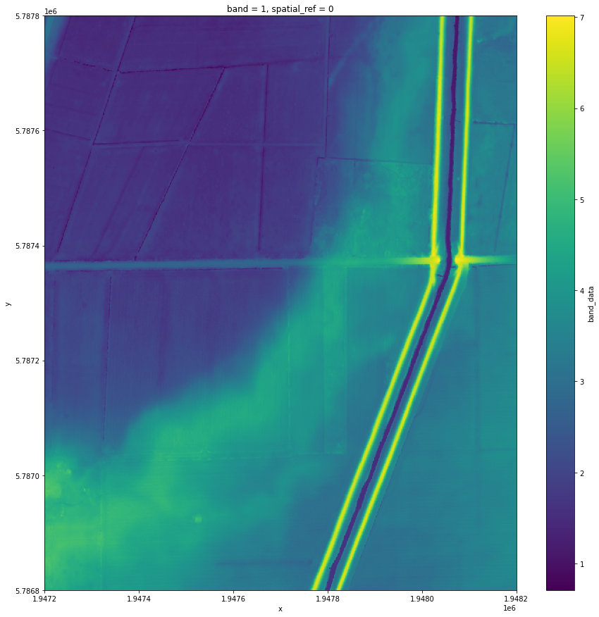
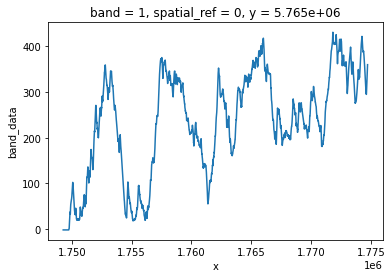

LINZ Digital Elevation Models#
[1]:
from oceanum.datamesh import Connector, Datasource
datamesh=Connector()
[2]:
ds=datamesh.load_datasource('linz-bay-of-plenty_2019-2022-dem_1m-2193')
[3]:
ds
[3]:
<xarray.Dataset> Size: 155GB
Dimensions: (band: 1, y: 187200, x: 206400)
Coordinates:
* band (band) int64 8B 1
spatial_ref int64 8B ...
* x (x) float64 2MB 1.847e+06 1.847e+06 ... 2.054e+06 2.054e+06
* y (y) float64 1MB 5.687e+06 5.687e+06 ... 5.874e+06 5.874e+06
Data variables:
band_data (band, y, x) float32 155GB dask.array<chunksize=(1, 7200, 4800), meta=np.ndarray>[28]:
dset=ds.isel(x=slice(100000,101000),y=slice(100000,101000))
sample=dset['band_data'].compute()
[29]:
%matplotlib inline
fig=dset['band_data'].plot(figsize=(15,15))

[20]:
from oceanum.datamesh import Connector
#Put your datamesh token in the Jupyterlab settings, or as argument in the constructor below
datamesh=Connector()
west_coast_dem=datamesh.query({
"id": "9c9f8732ceecf81d8419f625b59ee342",
"label": "west coast dem",
"geofilter": {
"geom": [
174.15798942154973,
-38.433438553933584,
174.9716312471787,
-37.30769647068231
],
"type": "bbox",
"interp": "linear"
},
"datasource": "linz-waikato_2021-dem_1m-2193",
"description": "Waikato LiDAR 1m DEM (2021)"
})
/home/dave/.local/lib/python3.10/site-packages/oceanum/datamesh/connection.py:247: UserWarning: Query is too large for direct access, using lazy access with dask
warnings.warn(
[23]:
#Get a single slice west-to-east
west_coast_dem['band_data'].isel(y=20000).plot()
[23]:
[<matplotlib.lines.Line2D at 0x77bec0820400>]

[ ]: